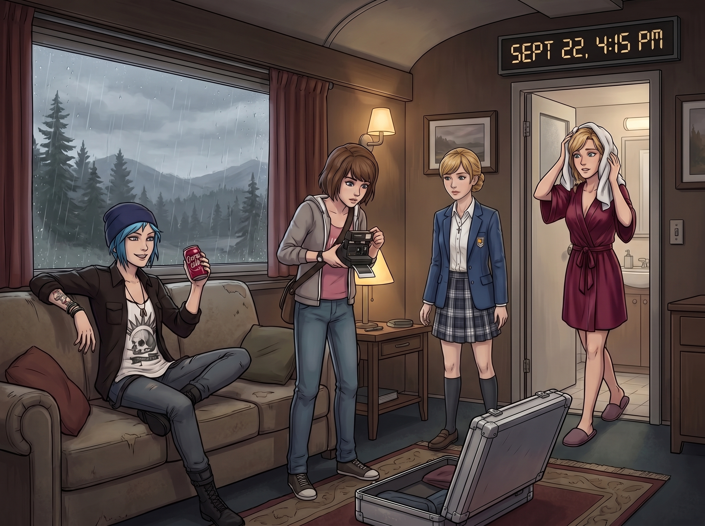
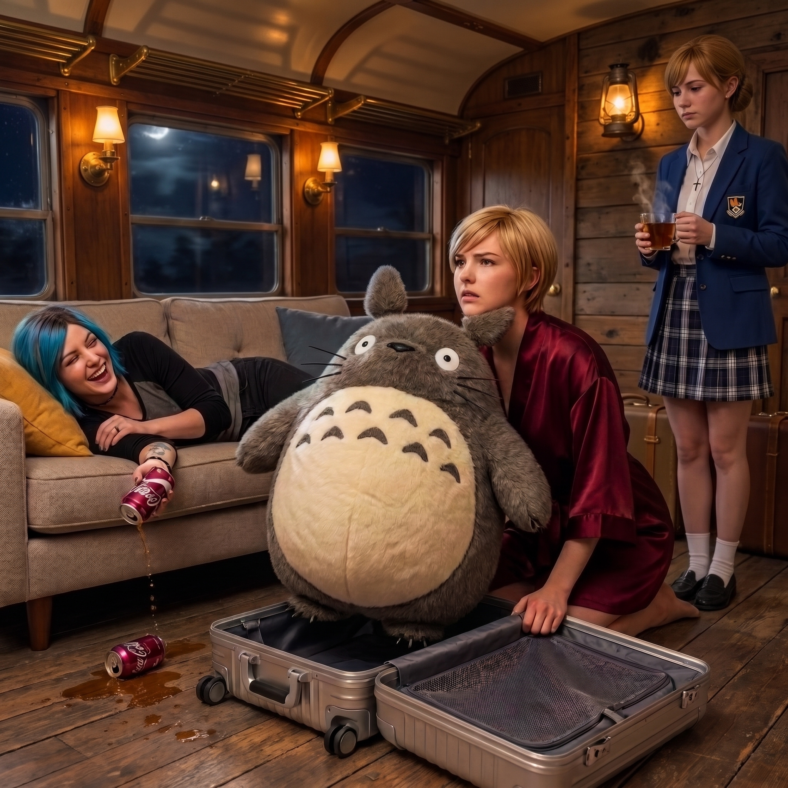
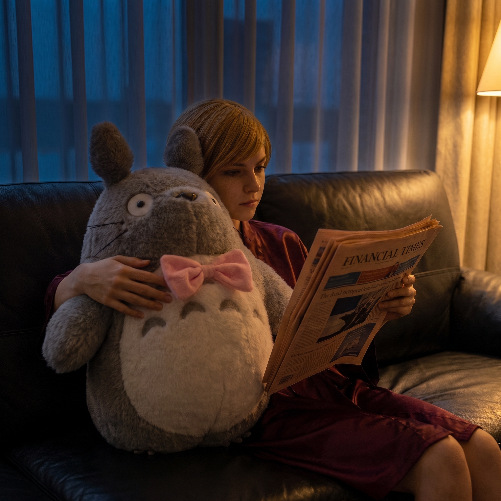

開箱審判



華盛頓州九月的冷雨劈裡啪啦地砸在二號車廂的金屬車頂上，但起居廂內的氣氛卻極度火熱，甚至帶著一絲三堂會審的意味。
客廳中央的地毯上，放著那個在成田機場歷經劫難的鋁鎂合金托運箱。
Chloe 盤腿坐在沙發上，手裡拿著一罐剛從冰箱拿出來的櫻桃可樂，滿臉寫著幸災樂禍；Max 默默地清空了拍立得的底片艙，換上了一盒全新的高感光底片，手指已經搭在了快門上；而 Kate 則端著三杯剛泡好的熱茶，眼神裡閃爍著純粹的期待。
這三個人完全沒有去管自己那個剛花三千美金買來的備用箱，全都死死盯著剛洗完澡、穿著酒紅色真絲睡袍從浴室走出來的名媛。
一、避無可避的開箱儀式
Victoria 擦著半乾的頭髮，看著沙發上那三雙宛如探照燈般的眼睛，腳步猛地停住了。
「妳們這群無業游民，不去整理那些生鏽的破鏡頭和沾滿灰塵的厚卡，圍在我的行李箱旁邊做什麼？」Victoria 雙手抱胸，試圖用慣用的冷酷氣場把她們逼退。
「少轉移話題，大富婆。」Chloe 喝了一口汽水，用下巴指了指地上的箱子，「規矩就是規矩。在機場妳用三千美金堵住了我們的嘴，但現在回到地盤了，我們必須對基地新成員進行嚴格的安保檢查。打開它，立刻。」
Victoria 咬了咬牙，深知今天這場公開處刑是躲不掉了。她深吸了一口氣，踩著拖鞋走過去，蹲下身，以一種極其莊嚴甚至帶著點悲壯的姿態，按下了密碼鎖。
「啪嗒。」
箱蓋剛一解鎖，那個因為被強力壓縮了十幾個小時的巨大聯名款龍貓玩偶，瞬間像發酵過度的麵團一樣「嘭」地一聲彈了出來，兩隻毛茸茸的長耳朵直接撞在了 Victoria 的下巴上。
二、階級辯護與藍領的無情嘲諷
「噗——哈哈哈哈哈哈！！」
Chloe 直接從沙發上滾了下來，笑得連手裡的可樂都灑在了地毯上：「老天爺！看啊！這是什麼？西雅圖最冷酷的冰山女王，居然在行李箱裡藏了一隻軟趴趴、胖乎乎、甚至還帶著粉紅色蝴蝶結的大肚子老鼠！」
Max 雖然沒笑出聲，但手裡的拍立得閃光燈已經毫不留情地亮了兩次，精準捕捉了龍貓耳朵打中 Victoria 下巴的瞬間。
面對 Chloe 的狂暴嘲諷，Victoria 的臉瞬間紅到了耳根，但她強大的總裁基因讓她立刻站了起來，開始了極度硬核的階級辯護：
「Price，妳那被劣質碳酸飲料腐蝕的大腦，永遠無法理解什麼叫頂級奢華工藝！這不是玩具！這是首席工匠用頂級小牛皮和純羊絨手工拼接的限量版藝術陳設！它代表的是一種打破傳統商業邊界的解構主義審美！」
「是是是，」Chloe 捂著肚子，眼淚都笑出來了，「解構主義審美的胖老鼠。大富婆，妳睡覺的時候是不是還會抱著這件藝術陳設，把臉埋在它的羊絨肚子裡流口水啊？」
三、天使的降維打擊與傲嬌的妥協
眼看 Victoria 氣得快要伸手去拿沙發旁邊的長柄雨傘打人了，Kate 輕輕放下了茶杯。
小天使走到那個巨大的龍貓面前，完全無視了 Victoria 剛才那一長串關於皮革和羊絨的高昂報價。她伸出雙手，無比自然、無比溫柔地給了那隻毛茸茸的龍貓一個巨大的擁抱，甚至把臉貼在它柔軟的肚子上蹭了蹭。
「哇……真的好軟，好溫暖呀。」
Kate 抬起頭，那雙純淨的眼眸裡沒有一絲一毫的嘲笑，只有滿滿的真誠與感動。她看向 Victoria，笑容甜美得足以融化冰川：「Victoria，謝謝妳。妳一定是因為看到二號車廂裡太冷清了，才特意排隊買了這麼可愛的東西來陪我們吧？這個粉紅色的蝴蝶結，其實是妳自己偷偷繫上去的吧？這是我見過最棒的禮物了。」
二號車廂裡的空氣突然安靜了三秒。
如果說 Chloe 的嘲諷是物理攻擊，Victoria 尚能用毒舌反彈；那 Kate 這種充滿無條件善意和溫柔的直球暴擊，對 Victoria 這種外冷內熱的傲嬌千金來說，絕對是毀滅性的降維打擊。
名媛原本準備好用來回擊的刻薄話語，全部卡在了喉嚨裡。她看著抱著龍貓的 Kate，臉頰上的紅暈不僅沒有消退，反而蔓延到了脖子。
「我……」Victoria 結巴了一下，隨後猛地轉過頭，假裝去整理睡袍的腰帶，聲音低得幾乎聽不見，「我才沒有特意買……只是剛好看到……而且那個見鬼的粉紅蝴蝶結是店員非要繫上的……」
她清了清嗓子，強行恢復了幾分高傲的姿態，指著她自己區域裡那把最昂貴的單人真皮沙發：「聽著，既然這件藝術品已經拿出來了，就把它放在那張沙發上。Marsh，只有妳洗過手之後可以摸它。Price，如果妳敢帶著機油味靠近它半米之內，我就用妳的扳手把妳的頭擰下來！」
四、照片牆上的新霸主
鬧劇結束後，Chloe 終於心滿意足地跑去整理她的卡牌，Kate 則開心地去廚房燒水準備試用新買的日本鐵壺。
深夜，Max 獨自在暗房裡把今天的拍立得相片洗了出來。
她走到二號車廂那面貼滿了公路旅行回憶的軟木塞照片牆前，將其中一張用大頭針牢牢地釘在了最顯眼的正中央。
相片裡，是 Victoria 穿著酒紅色的真絲睡袍，正襟危坐地靠在那把真皮沙發上，手裡拿著一本厚厚的財經雜誌裝模作樣地看著。而在她的身邊，那隻巨大的毛絨龍貓正穩穩地靠著她的肩膀。
最細節的是，相片捕捉到了 Victoria 拿著雜誌的手指，正不自覺地、輕輕地撫摸著龍貓肚子上那個粉紅色的蝴蝶結。
Max 看著這張照片，滿意地拍了拍手上的灰塵：「歡迎來到二號車廂的真實世界，Chase 夫人。」